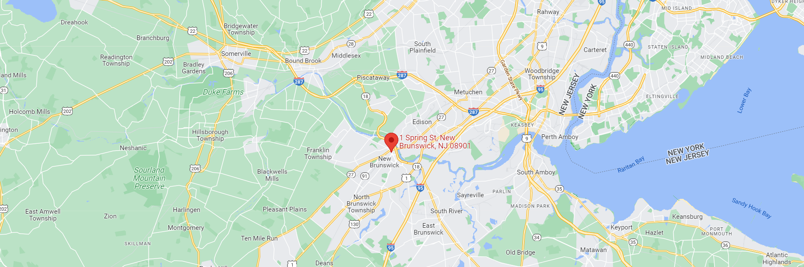

Physics-aware Research for Autonomous Computational SYStems (PRACSYS) Lab
The "Physics-aware Research for Autonomous Computational SYStems” (PRACSYS) Lab at Rutgers University (RU) conducts research in Algorithmic Robotics: Robot Planning, Data-driven Control and Perception. Applications include manipulation, locomotion and navigation, with a focus on novel soft mechanisms and multi-robot problems.

Contact
KOSTAS BEKRIS
110 Frelinghuysen Road, Computer Science Department, Piscataway, NJ, 08854
848 445-8854
kostas.bekris\AT\cs.rutgers.edu
732 445-0537